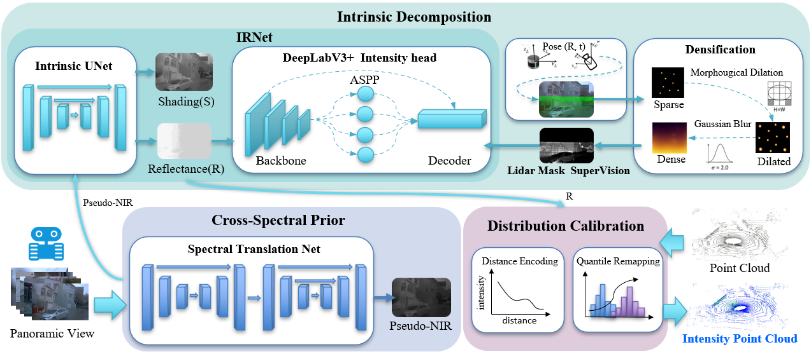

TL;DR
NIDAR is a plug-and-play LiDAR intensity synthesis module that augments arbitrary LiDAR simulators and re-simulation pipelines. It infers physically consistent intensity from low-cost RGB inputs and geometry, requiring no per-scene training/optimization and no intensity ground truth during deployment.
Abstract
As a crucial signal for perception and state estimation, LiDAR intensity provides complementary reflectance cues beyond geometry. Despite its importance, most existing simulation pipelines either omit intensity altogether or rely on reconstruction-based approaches that require scene-specific real intensity supervision. Such dependence on real groundtruth data not only incurs substantial data acquisition costs but also hinders scalability and limits generalization across scenes, sensors, and simulation platforms.
To address this gap, we propose NIDAR, a general and scene-agnostic intensity synthesis module that augments arbitrary LiDAR simulators and re-simulation pipelines. NIDAR infers physically consistent intensity from low-cost RGB inputs and geometry, requiring no per-scene training/optimization and no intensity ground truth during deployment. We implement NIDAR as a hierarchical UNet+DeepLabV3 intrinsic decomposition network with lightweight distribution calibration, achieving real-time feed-forward inference while avoiding the hours-level scene fitting cost of reconstruction-based baselines. Comprehensive experiments on nuScenes and Waymo verify the effectiveness and cross-scene generalization of NIDAR. We further validate its scalability by integrating it into Isaac Sim, UE5, and generative simulation pipelines. In addition, downstream SLAM evaluations in Isaac Sim demonstrate that NIDAR-generated intensity improves localization accuracy and significantly reduces drift, especially in challenging scenarios. Our approach provides a unified solution that equips existing LiDAR simulation systems with realistic intensity generation capability. To benefit the research community, we will release our codes upon paper acceptance.
Contributions
- We propose a general simulation framework NIDAR for inferring LiDAR intensity from RGB images, enabling physically consistent intensity generation without per-scene training/optimization and without requiring intensity ground truth during deployment.
- We design a hierarchical UNet+DeepLabV3 intrinsic decomposition network tailored to NIR characteristics, achieving real-time feed-forward intensity inference with strong cross-scene generalization.
- We integrate NIDAR into multiple LiDAR simulators (Unreal Engine 5 and Isaac Sim) and generation-based methods (LiDAR-Diffusion), demonstrating its practicality and scalability. Extensive qualitative and quantitative evaluations validate the physical plausibility, robustness, and demonstrable impact of the NIDAR intensity on downstream SLAM performance.
Pipeline

NIDAR pipeline. Cross-spectral pseudo-NIR prior, intrinsic decomposition (reflectance/shading) with mask-aware intensity supervision, and distribution calibration for plug-and-play LiDAR intensity synthesis.